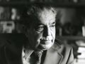

„Książki Wojciecha Żukrowskiego były odbierane różnie, ale nigdy nie można było odmówić mu talentu.”Ryszard Matuszewski
„Miał wielki talent i niesamowitą łatwość tworzenia.”Jerzy Passendorfer
Pisarz, dziennikarz i scenarzysta. Ta wersja porządkuje materiały z archiwalnej strony w lekkiej, statycznej formie bez zależności od Worda i starego układu tabelowego.

„Książki Wojciecha Żukrowskiego były odbierane różnie, ale nigdy nie można było odmówić mu talentu.”Ryszard Matuszewski
„Miał wielki talent i niesamowitą łatwość tworzenia.”Jerzy Passendorfer
Wybrane pozycje i odnośniki przeniesione z oryginalnej strony.
Jedna z najbardziej znanych powieści autora, wielokrotnie wznawiana i tłumaczona.
Przejdź do bibliografiiOpowiadanie i scenariusz związany z filmową twórczością autora.
Zobacz materiał filmowyKsiążka, która doczekała się także adaptacji filmowej.
Zobacz opis ekranizacji